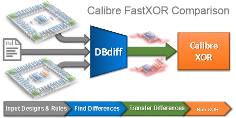

Database Comparison
The three database comparison flows are described as follows:
- Standard XOR
Calibre dual-database flow where two databases are compared with no pre-processing. This flow uses Calibre nmDRC to perform the SVRF XOR operation on layers in your database. The entire layouts are involved in the XOR operations. An XOR rules file is required. This is sometimes referred to as traditional XOR.
 Tip
TipSee “Differences Between FastXOR and Standard Dual Database Processing” for more details.
- FastXOR
FastXOR uses pre-processing by DBdiff to analyze the layout databases to determine the objects of the databases that are different. Then, Calibre nmDRC-H is used to perform an XOR on just the objects and layers that have been determined to be different by DBdiff.
The run times of FastXOR and Calibre nmDRC-H usually differ. In most cases, FastXOR is faster than Calibre nmDRC-H for the same runtime environment. However, Calibre nmDRC-H can be faster in designs where the runtime is short, or where the hierarchies are dissimilar. FastXOR is optimized for designs using similar hierarchies.
- DBdiff
The DBdiff application is a command-line driven Calibre tool that compares all hierarchy, shapes, properties, and text between two databases. This comparison is not meant to be a replacement for the standard XOR operation, but instead provides designers a way to find the differences between two databases quickly. Trade-offs in accuracy and performance are discussed in “DBdiff Database Comparison”.
Invocation
Utility |
Command-line |
GUI |
|---|---|---|
Standard XOR |
|
Calibre DESIGNrev > Utilities > Layout DIFF Calibre Interactive nmDRC |
FastXOR |
|
Calibre Interactive nmDRC > Inputs > FastXOR |
DBdiff |
|
N/A |